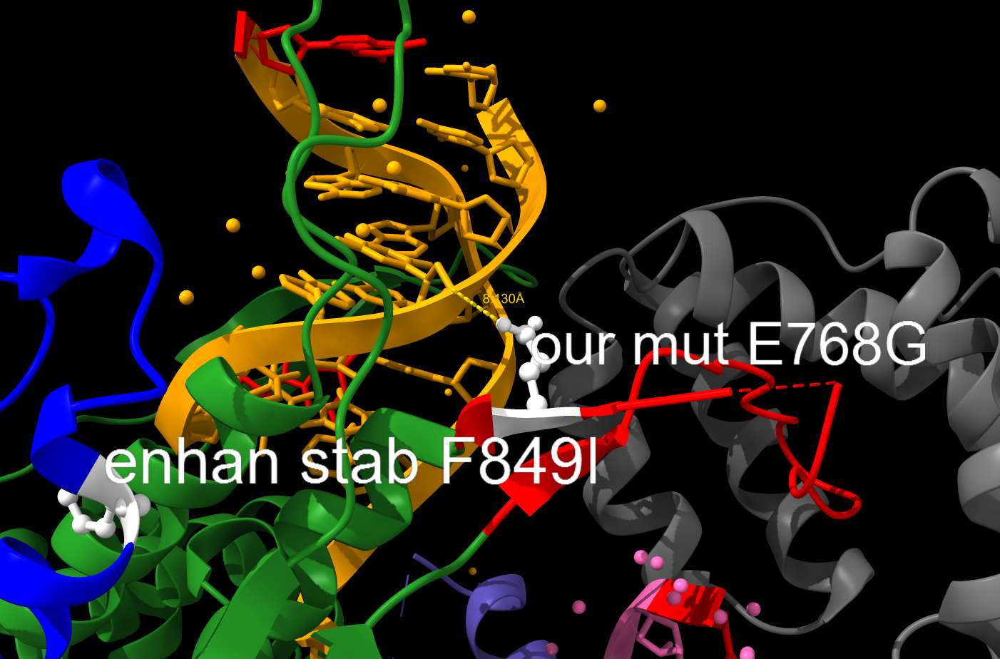

ProEvoT7
1. T7 mutant structure analysis
目的：分析T7突变体在yeast中转录效果提高的结构基础。
内容：以PDB 1H38 WT T7结构为基础，标出Alper使用的T7突变体突变位点，标出厉思宏进化T7突变体突变位点（1H38氨基酸加12等于厉思宏氨基酸位点）。
2022-07-31
分析软件Chimera，原始文件1H38，T7蛋白的结构域包括 N-terminal domain (1-325)负责启动子识别和DNA打开 灰色标出，thumb sub-domain (residues 326–411)是催化结构的一部分 紫色标出，palm sub-domain, containing residues 412–553 and 785–879主要催化中心 蓝色标出，fingers sub-domain (aa 554–784)是催化结构的一部分 绿色标出，The residues 740-769 form a specificity loop负责启动子识别 红色标出。此外DNA序列 黄色标出，RNA序列 粉色标出，序列的5’端 红色标出。our mut 代表厉思宏的T7突变体位点，enhan stab、enhan trans代表Alper使用的突变位点。
厉思宏突变T7突变体 序列，其中t7pm-(1-20&16&14)序列为 E768G/V574A 荧光10000，t7-(4&5&6&7)序列为 D13G/M81V/K407T/D471N/V687G/N869I/I875T 荧光5000.
分析Alper使用的T7突变体的突变位点为6个 白色标出，一个在N-terminal domain，效果是与相近核酸形成相互作用，提高转录，5个在其他domain，效果是与相近氨基酸侧链形成相互作用，增强蛋白热稳定性。
分析厉思宏T7 E768G/V574A突变位点为2个 白色标出，V574A在fingers sub-domain，E768G在specificity loop，突变在蛋白表面。V574A距离核酸较远，其作用可以排除与核酸互作，其附近633位突变增强蛋白稳定性。E768G距离核酸较远 8A，可排除与核酸互作，specificity loop的功能是部分启动子序列的识别，但768不是关键识别位点且距离较远（关键位点是748 758）。
分析厉思宏T7 D13G/M81V/K407T/D471N/V687G/N869I/I875T 突变位点为7个 白色标出，突变在蛋白表面，氨基酸化学性质变化趋势无一致规律。
厉思宏突变T7突变体D13G/M81V/K407T/D471N/V687G/N869I/I875T 结构
总结：T7 突变体突变位点在蛋白表面，远离DNA-RNA结合区域，拟与提高蛋白热稳定性有关。
